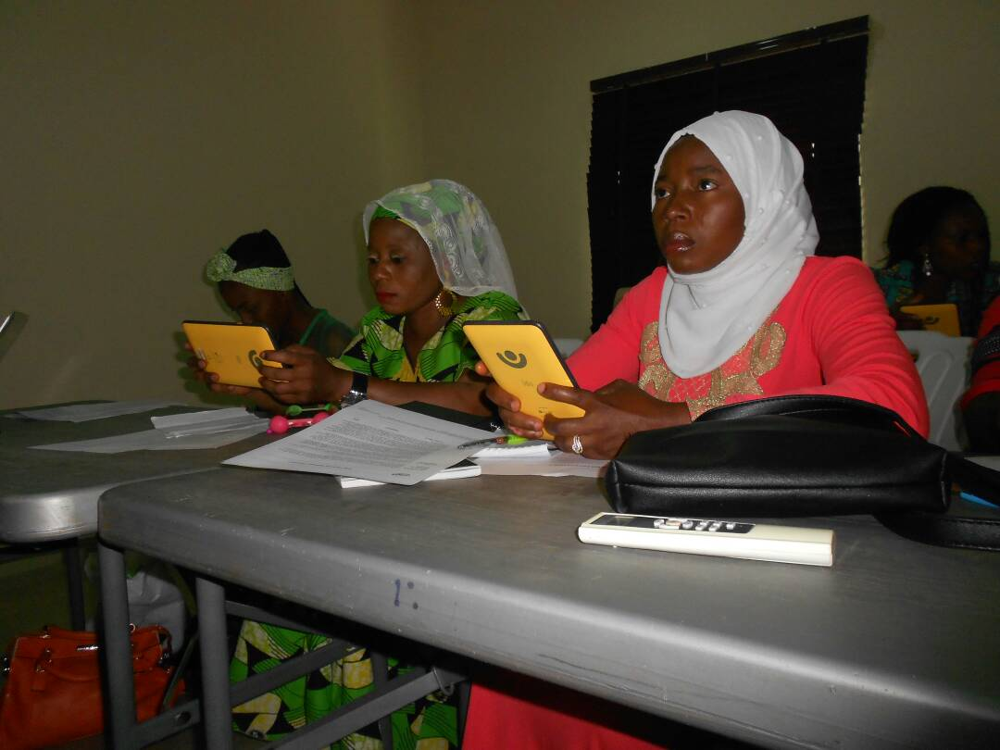

Leadership Newspaper

Coverage, features and the storytelling platform carrying our work beyond our own channels.


Informing. Inspiring. Empowering the African woman.
Our storytelling arm, sharing the health, wellness, leadership, entrepreneurship and social stories of African women.
Press play to watch right here, or open any film on YouTube. Nothing loads from YouTube until you press play, so the page stays fast on mobile data.
Swipe or use the arrows to see all seven films.
We are curating a wellness listening companion for The Resilient Woman Community, made for the quiet moments between the work. It will live here as soon as it is ready.
For interviews, our media kit, or founder commentary, reach our media team directly.
Email the Media Team